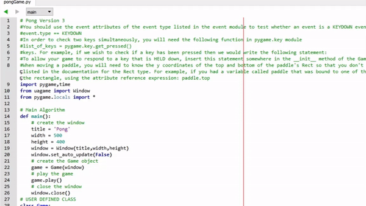
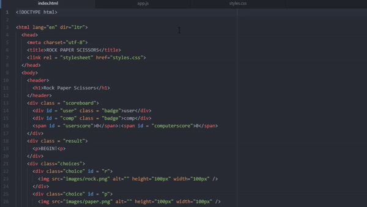

1970's style Pong Game made with Python using the Pygame module.
This is a simple game that demonstrates some of the initial coding techniques and practices I learned when I first began coding.
These include working with lists, if/else statements, user defined methods and classes, etc.
It provided a good basis for learning and working with other languages.Sudoku Solver made with C using a recursive back-tracking algorithm.
Recursive back-tracking is different from regular recursion as back-tracking means it searches all possibilities until it finds a correct solution (sodoku requirements in this case),
while recursion simply means the function calling itself until it reaches a base case. This program really highlights much of the knowledge
I have learned in programming thus far.

Rock Paper Scissors game I created when I first began web design. It comes from a youtube tutorial
great for beginners that demonstrates some basic web design methods and principles. The website is extremely simple yet extremely effective
for learning how to code in HTML5, JavaScript, and CSS. It also provided me with the knowledge to build this website!
About: Hey there! I'm Evan, a 4th year student at the University of Alberta studying Psychology and Computing Science.
I am well versed in Python and C, and have been learning Java and Web Design for a little while now. Currently, I am working with a team of 6 to develop
a simple android app that tracks books you borrow and lend out to friends.